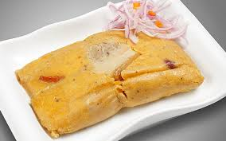

TAMALES
El tamal es un alimento de origen precolombino, de las culturas mesoamericanas, preparado generalmente a base de masa de maíz o de arroz rellena de carnes, verduras y hortalizasalsas y de otros ingredientes. Los tamales de Colombia son una comida tradicional hecha con masa de maíz rellena de carne, pollo, o cerdo, y otros ingredientes como verduras. Se cocinan envueltos en hojas de plátano y se preparan de diversas formas y con variados condimentos, dependiendo de la región. Los tamales son consumidos comúnmente en ocasiones especiales y festividades.
